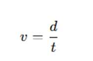
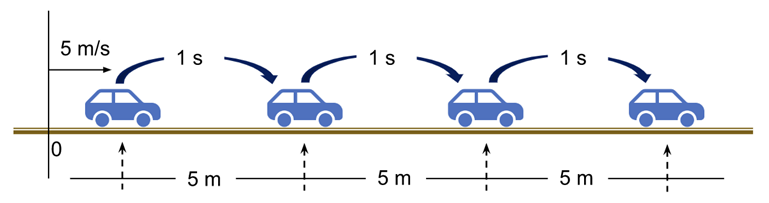
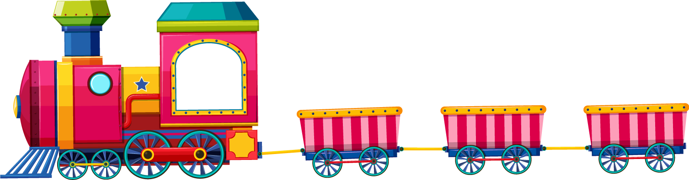

El Movimiento Rectilíneo Uniforme (MRU) es aquel en el que un objeto se desplaza a lo largo de una línea recta y mantiene una velocidad constante durante todo el trayecto. Esto significa que la distancia recorrida es proporcional al tiempo transcurrido y no hay cambios en la rapidez ni en la dirección del movimiento.
En el MRU, el objeto no acelera ni desacelera, por lo que su aceleración es cero.
Su fórmula es:


Fig. 12: Auto avanzando en línea recta, las flechas muestran que siempre recorre la misma distancia cada segundo.
Ejemplo explicado
Un tren recorre 180 km en 3 horas.

Fig. 13: Tren haciendo un recorrido de 180km
v=180÷3=60v = 180 ÷ 3 = 60v=180÷3=60 km/h.